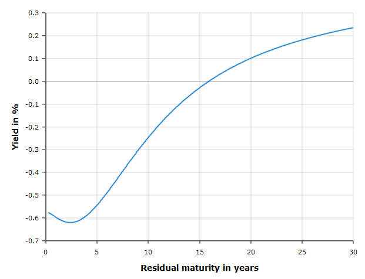

|
June 08, 2020 Should the EU issue perpetual bonds? The idea of issuing perpetual debt to combat the Covid crisis has recently been floated by prominent public figures such as hedge fund manager George Soros (The EU Should Issue Perpetual Bonds) and economist Luis Garicano and former Belgian Prime Minister Guy Verhofstadt (Toward a European Reconstruction Fund). A perpetual bond is a bond that pays an annual coupon forever and whose principal is never repaid. Conceptually, a perpetual bond is a coupon-paying bond with an infinite maturity. The main argument for issuing perpetual bonds is that the EU should take advantage of the low-yield environment to lock in low interest rates by borrowing with infinite maturity. A related argument is that perpetual bonds don't need to be refinanced. When a government issues a bond, it usually repays the principal at maturity by issuing a new bond. This is called debt roll-over. Rolling over a bond is subject to refinancing risk if creditors become worried about the solvency of the government and are reluctant to lend again at maturity, as happened during the 2011 European sovereign debt crisis. Perpetual bonds are not subject to roll-over risk because they never need to be rolled over. Perpetual bonds seems like a great idea – cheap financing and no roll-over risk. Buy wait a minute, how do we know the interest rate on a perpetual bond is low if perpetual bonds don't exist (yet)? Let us look up the euro yield curve on the website of the ECB: What should be the yield of a perpetual bond? We need to remember the definition of the yield from the Financial Markets course: the yield is the average interest rate across all coupon maturities weighted by the present value of each coupon. It is impossible to do this calculation for a perpetual bond, because we do not observe interest rates until infinite maturity. The above yield curve stops at 30 years because there exist few bonds with maturity longer than 30 years. We can try to extrapolate the yield curve up to maturities of 40 years and perhaps 50 years, but it is virtually impossible to know what the yield curve looks like beyond 50 years. Since a perpetual bond derives a large fraction of its value from coupons paid beyond 50 years, the yield curve tells us little about what the yield of a perpetual bond will be. If it turns out the yield is in fact 2%, a perpetual bond will be a costly source of financing compared to issuing 10-year bonds which currently trade at interest rates below 0%. Proponents of perpetual bonds have a response to this objection: the European Central Bank can purchase perpetual bonds to keep the yield low. This is true but one must bear in mind it implies the central bank would effectively be financing the government through money creation, since central banks purchase government debt by creating money. This may or may not be a problem – see this series of posts on money creation – but it changes the nature of the proposal: the question of whether to issue perpetual bonds becomes a question on how to best finance governments with central bank money. |